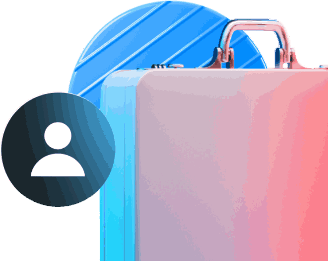
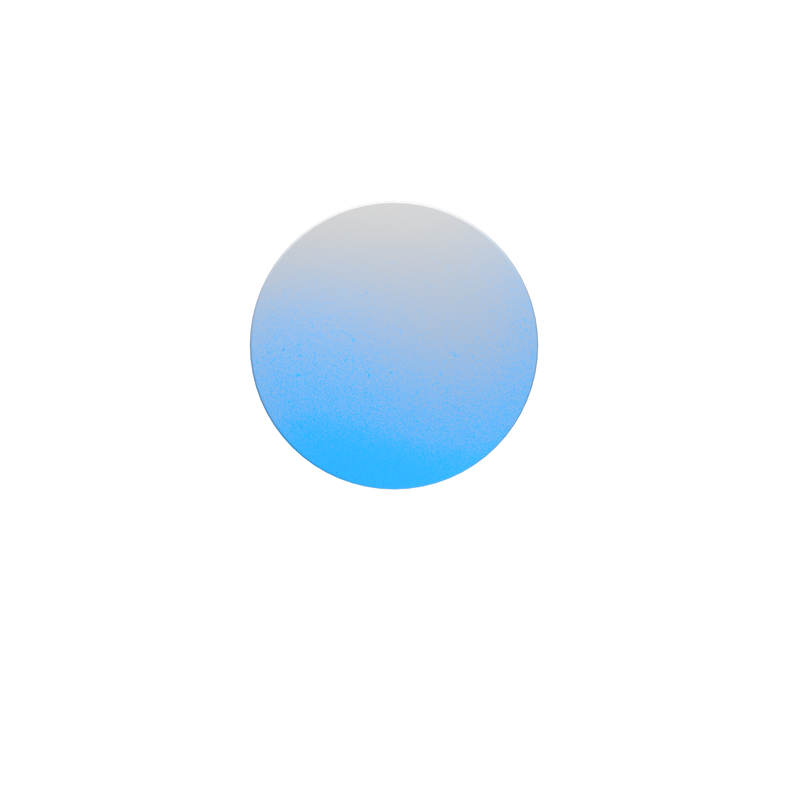
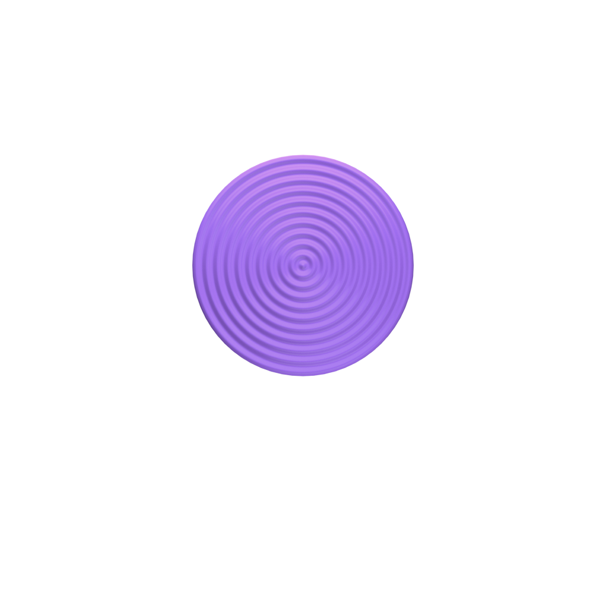

Подбор и скрининг
Поиск кандидатов, первичная проверка опыта и документов, тестирование навыков в согласованном объёме.Возможный материал / действиеМатериалы для оценки навыков и опыта кандидатов.
Организуем поиск и проверку кандидатов, подготовку документов, переезд и сопровождение под потребность вашего предприятия
Предварительная применимость
Возможность привлечения зависит от профессии, региона, статуса работодателя и условий проекта. Конкретную схему и график подтверждают после уточнения потребности.
Минимальный объём относится ко всему проекту, а не к каждой профессии отдельно.
Задачи предприятия
Производство, строительство, сельское хозяйство, логистика и эксплуатация. Примеры помогают оценить круг задач, но не гарантируют доступность кандидатов.
Условия проекта
Профессии и навыки, объём и регион, условия работы и размещения, допустимая договорная и миграционная схема.
Почему Индия
Привлечение специалистов начинается с требований к работе и условий проекта. Кадровый резерв дополняется проверкой навыков и согласованной подготовкой.
Посмотреть профессииПоиск специалистов под согласованные профессии и требования предприятия.
Возможность тестирования навыков до приезда в согласованном объёме.
Состав работ, график и обязанности сторон определяются после уточнения потребности.
Как проходит проект
График определяется после подтверждения потребности и согласования условий проекта. Срок зависит от способа привлечения, объёма и готовности исходных документов.
Заполните вручную, продиктуйте голосом или загрузите бриф для распознавания нейросетью
В месяц, до вычета НДФЛ
Компания организует питание?*
Проживание сотрудников*
Режим работы
Наши менеджеры проверят её и свяжутся с вами в ближайшее время.
Электросварщик ручной сварки, 5-й разряд
Электросварщик ручной сварки, 5-й разряд
Электросварщик ручной сварки, 5-й разряд
Что входит в сопровождение
Берём на себя согласованные этапы привлечения. Точный состав работ определяется после уточнения проекта и фиксируется в коммерческом предложении и договоре.
Поиск кандидатов, первичная проверка опыта и документов, тестирование навыков в согласованном объёме.Возможный материал / действиеМатериалы для оценки навыков и опыта кандидатов.

Помощь в адаптации, бытовых и рабочих вопросах в рамках согласованной модели поддержки.Возможный материал / действиеКанал и порядок решения вопросов сопровождения.
Организация согласованной части оформления визы, разрешений и миграционного учёта по применимой схеме.Возможный материал / действиеПеречень оформляемых документов и распределение действий сторон.
Подготовка под требования работодателя и специфику производства в согласованном объёме.Возможный материал / действиеСогласованная программа подготовки и сведения о её прохождении.


Подготовка согласованных материалов для кадрового учёта, бухгалтерии и проверок.Возможный материал / действиеСогласованный комплект документов и отчётных материалов.

Организация согласованной части переезда, встречи и сопровождения до объекта.Возможный материал / действиеПлан переезда и распределение организационных задач.
Перечни материалов приведены для понимания состава работ. Их включение в пакет подтверждается условиями конкретного проекта.
Поддержка после выхода
Возможность бесплатной замены, основания и порядок её проведения определяются условиями коммерческого предложения и договора. Покрытие перелёта, размещения и сопутствующих расходов не предполагается автоматически.
Общая справка
Способ зависит от профессии, региона, статуса работодателя и условий проекта. По странице нельзя окончательно определить подходящую схему.
Начните с понимания задач и обязанностей сторон. Применимость порядка проверяется для конкретного проекта; эта справка не является индивидуальной рекомендацией или юридическим заключением.
Требования к подтверждению знания русского языка, истории России и законодательства зависят от применимого порядка и предусмотренных законом исключений.Отрасли и профессии
Это примеры задач. Возможность подбора и способ привлечения определяются для конкретного проекта.
FAQ
Общие ответы о документах, сроках, обязанностях и условиях проекта.
Применимый порядок и пакет документов определяются для конкретного проекта. Работы по оформлению и обязанности работодателя распределяются в соответствии с законодательством, коммерческим предложением и договором.
Состав языковой подготовки и сопровождения согласуется под задачи предприятия. При выбранной модели поддержки может работать бригадир-переводчик. Требования к подтверждению знания русского языка, истории России и законодательства зависят от применимого порядка и предусмотренных законом исключений.
Проверка навыков, опыта и документов проводится в согласованном объёме. Материалы для оценки кандидатов и участие работодателя в отборе определяются условиями проекта.
График определяется после подтверждения потребности и согласования условий проекта. Срок зависит от способа привлечения, объёма и готовности исходных документов.
Могут рассматриваться квотируемый или неквотируемый порядок, режим ВКС либо условия для резидентов ТОР. Применимость зависит от профессии, региона, статуса работодателя и условий проекта. По странице нельзя окончательно определить схему.
Масштаб и график набора подтверждаются после уточнения условий проекта. Минимальный объём — 25 специалистов суммарно, а не отдельно по каждой профессии. Возможность набора конкретного объёма требует проверки.
Возможность бесплатной замены, основания и порядок её проведения определяются условиями коммерческого предложения и договора. Покрытие перелёта, размещения и сопутствующих расходов не предполагается автоматически.
Ответственность зависит от законодательства и выбранной схемы; границы работ и ответственности сторон закрепляются в договоре. Сопровождение при проверке не означает переноса ответственности работодателя.
Перечень документов зависит от применимой схемы и согласованного состава работ. Комплект для кадрового учёта, бухгалтерии и проверок определяется для проекта и фиксируется в договоре.
Обязанности по размещению и его организация зависят от применимой схемы и условий проекта. Распределение задач и расходов согласуется сторонами и фиксируется в договоре.
Цена и диапазон стоимости на странице не публикуются. Стоимость определяется после уточнения количества специалистов, квалификации, региона, способа привлечения и состава услуг.